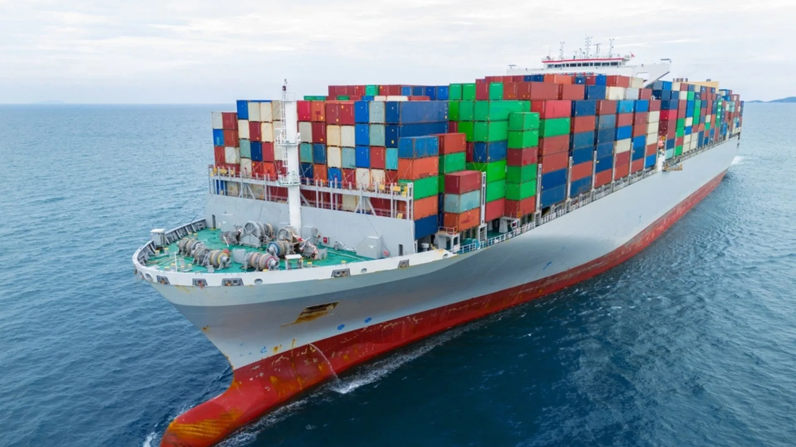
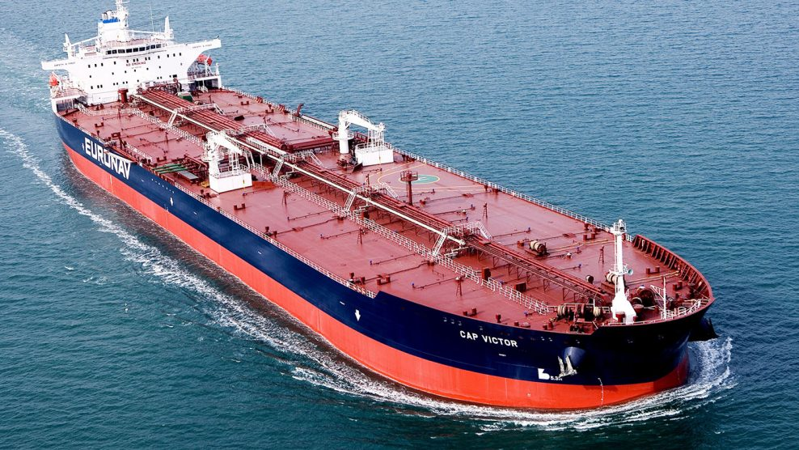
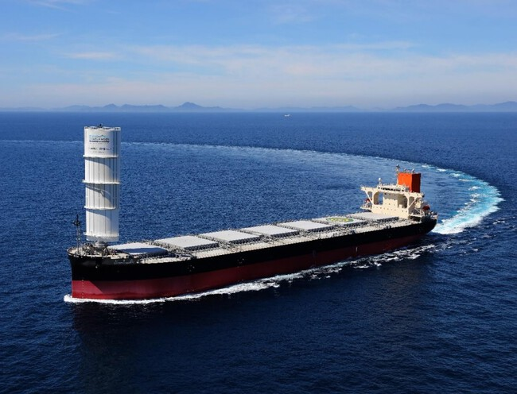
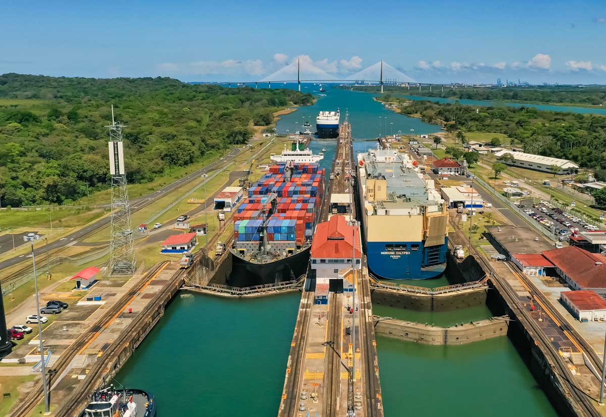
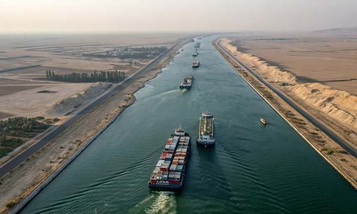
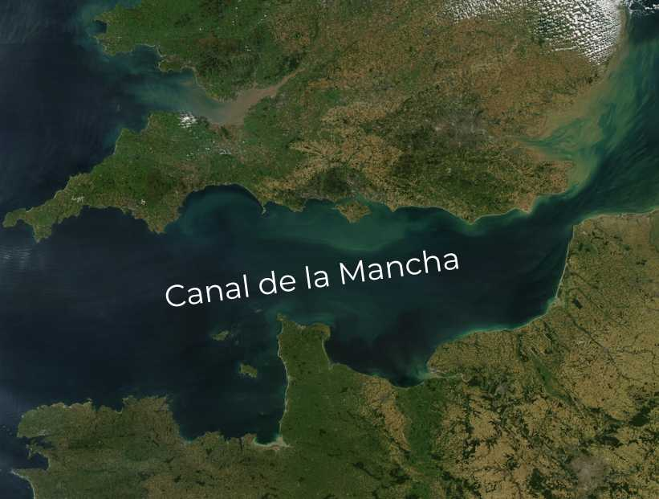
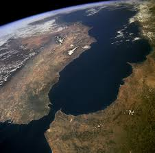
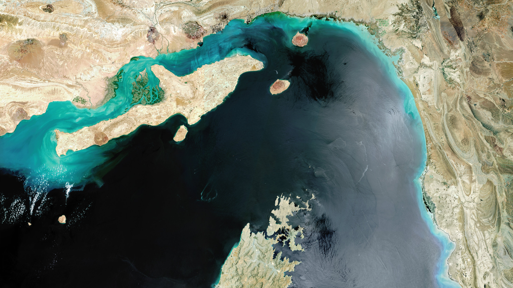

Rutas Marítimas del Comercio Internacional

La Columna Vertebral de la Economía
Las rutas marítimas son los "corredores" oceánicos por donde circula el 80-90% del comercio mundial. El profesor destaca la importancia de conocer no solo su ubicación, sino su historia y los conflictos que los rodean.
Tipos de Carga y Buques

Contenedores
Transportan bienes de consumo. Base de la economía moderna.

Tanqueros
Líquidos vitales: petróleo y gas (GNL). Enfoque en canales energéticos.

Graneleros
Carga suelta: granos, carbón y minerales.
Principales Canales: Historia y Conflictos
A continuación, detallamos las rutas solicitadas en la asignación:

🇵🇦 Canal de Panamá
- Posición: Conecta Atlántico y Pacífico.
- Historia: Inaugurado en 1914. Administrado por EE.UU. hasta 1999 (Tratados Torrijos-Carter).
- Actualidad/Conflicto: La sequía reciente redujo el tráfico diario de buques, afectando la cadena de suministro global.

🇪🇬 Canal de Suez
- Posición: Egipto. Une Europa y Asia.
- Historia: Inaugurado en 1869. Nacionalizado por Nasser en 1956, provocando la "Crisis de Suez".
- Producción: Pasan aprox. 19.000 buques al año (12% del comercio mundial).

🇬🇧/🇫🇷 Canal de la Mancha
- Posición: Separa Gran Bretaña de Francia. Une el Mar del Norte con el Atlántico.
- Importancia: Es la ruta marítima más transitada del mundo (más de 500 barcos/día).
- Tráfico: Crucial para el transporte de gas y petróleo hacia el norte de Europa.

🇪🇸/🇲🇦 Estrecho de Gibraltar
- Posición: Conexión entre Europa (España) y África (Marruecos). Puerta del Mediterráneo.
- Conflicto: Históricas tensiones territoriales y control de flujos migratorios.
- Tráfico: Aprox. 100.000 buques cruzan cada año.

🛢️ Estrecho de Ormuz
- Posición: Golfo Pérsico.
- Importancia: Arteria del petróleo mundial.
- Conflicto: Zona de alta tensión geopolítica constante (Irán vs Occidente).
🇻🇪 Venezuela en el Mapa
Nuestra posición como "Puerta del Caribe" nos hace dependientes de estas rutas para la exportación de crudo y la importación de insumos tecnológicos. Cualquier conflicto en Suez o Panamá afecta directamente los costos en Venezuela.